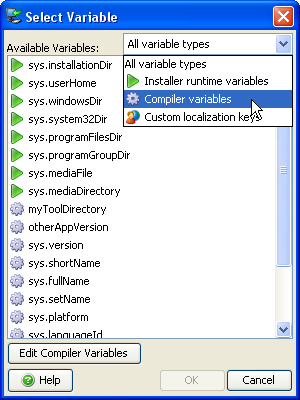

Variables


Variables |
|
${prefix:variableName}
where prefix denotes the functionality scope of the variable and is one of
Text fields in the install4j IDE where you can use variables have a
 variable selector
next to them. The variable selection dialog shows all known variables that can be used in the current context.
variable selector
next to them. The variable selection dialog shows all known variables that can be used in the current context.

The above dialog, for example, is shown when clicking on the
button in a text property of an installer element or
form component.
There, you can use compiler variables, installer variables and custom localization keys, but not launcher variables.
For both compiler and installer variables install4j offers a fixed set of "system variables". These variables are prefixed with "sys.". These variables are not writable and it is discouraged to use this prefix for your own variables.
Compiler variables are written as
${compiler:variableName}
The value of a compiler variable is a string that is known and replaced at compile time. The installer runtime or the generated launchers
do not see this variable, but just the value that was substituted at runtime.
You can use compiler variables for various purposes. The most common usage of a compiler variable is the possibility to define a string in one place and use it in many other places. You can then change the string in one place instead of having to look up all its usages. An example of this is the pre-defined "sys.version" variable that contains the value of the text field where you enter the application version. Another usage for compiler variables is to override certain project settings on a per-media file basis. For example, if you want to include one directory in the distribution tree for Windows but another one for Mac OS X, you can use a compiler variable for that directory and override it in the media file wizard. Finally, compiler variables can be overridden from the command line compiler and the ant task.
When you use a compiler variable in your project that is not a system variable, it must be defined in on the Compiler Variables tab of the General Settings step. If an unknown variable is encountered, the build will fail. You can use other variables in the value of a variable. Recursive definitions are detected and lead to a failure of the build. It is not possible to define compiler variables with the name of a system variable.
install4j provides a number of system compiler variables. They include:
You can access environment variables on the build machine with the syntax
${compiler:env.environmentVariableName}
where "environmentVariableName" is the name of an environment variable. This only works if no
compiler variable with the same name is defined on the Compiler Variables tab. This is
resolved at build time, not at run time.
In order to debug problems with compiler variables, you can switch on the extra verbose output flag in the Build step. All variable replacements will be printed to the build console.
Installer variables are written as
${installer:variableName}
The value of an installer variable is an arbitrary object that is not known at compile time. Installer variables
are evaluated when requested in the installer or uninstaller.
Installer variables are not pre-defined in the install4j IDE like compiler variables. Unlike with compiler variables,
it is not an error if an installer variable is accessed that has not been defined. Undefined installer variables have
a null value.
Installer variables are used to wire together actions, screens and form components at runtime. The user input in screens is saved to variables, which can be used in the properties of certain actions. Furthermore, variables are routinely used in condition and validation expressions. Some examples are given in the help topic on form screens. In expression/script properties, you retrieve variables by invoking
context.getVariable(String variableName)
Variable value can be set with the installer API by invoking
context.setVariable(String variableName, Object variableValue)
A common scenario is the need to calculate a variable value at runtime with some custom code and use the result as the initial value of a component in a screen. To achieve this you can add a "Set a variable" action to the startup screen and set its "Variable name" property to some variable name. In contexts where a variable name is expected by install4j, you must not use the ${installer:variableName} syntax but specify variableName only. The return value of the "Script" property is written to the variable. If, for example, the variable represents the initial directory that is displayed for a customizable "Directory selection" screen, you then set the "Initial Directory" property of that screen to ${installer:variableName}. In this way you have wired an action with a screen.
Another important use of installer variables is for the locations of custom installation roots. In most cases a custom installation root contains an installer variable that is resolved at runtime. Often, one of the system installer variables that represent a "magic" folder can be used, such as the Windows system32 directory.
Installer variables can be passed to the installer or uninstaller from the command line prefixed with -V (for example -VmyVar=test). Alternatively, you can specify a property file containing installer variables with -varfile (for example -varfile myfile.prop). The variables will be String objects.
install4j provides a number of system installer variables. They include:
context.setInstallationDirectory(File installationDirectory).
null. The value of this variable can change
in the installer as the user selects a program group on the "Create program group" screen.
Launcher variables are written as
${launcher:variableName}
The value of a launcher variable is a string that is not known at compile time.
Launcher variables are evaluated when a generated application launcher is started.
Launcher variables can only be used in the
VM parameters text field
of the launcher wizard. No
user-defined launcher variables exist, the available system launcher variables
include:
Custom localization keys are written as
${i18n:keyName}
The value of a custom localization key depends on the language that is selected for the installer.
You can use this facility to localize messages in your installers if they support
multiple languages.
You can supply key value pairs for internationalization in the custom localization file.
The variable selection dialog shows all keys in the custom localization file for the principal
language of your project.
All standard messages displayed by install4j can be referenced with this syntax as well. You can locate the key name in one of the message_*.utf8 files in the $INSTALL4J_HOME/resource/messages directory and use it anywhere in your project. The standard messages can be overwritten by your custom localization files.
|
|